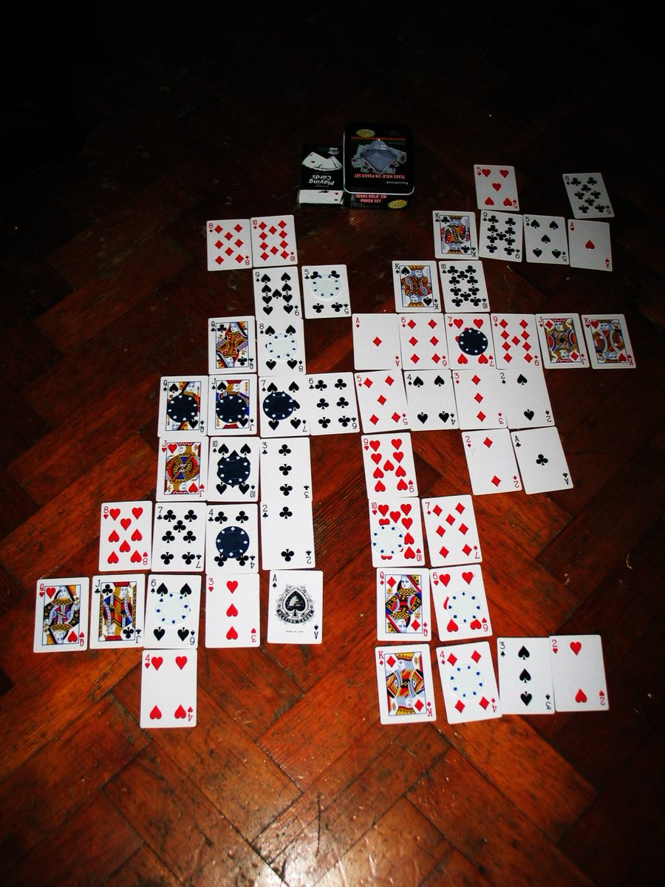

https://twitter.com/wetgenes/status/1227030480865890305 I mean http://groups.io also here is a picture of my cat with a keyboard reflected in his eyes.
Wowzers http://group.io has just successfully sent out a reminder that it is the #Bradford #GameDev meetup inapub AKA #badonkadonk this wednesday.
https://groups.io/g/badonkadonk/message/1
If you too would like such reminders then you should click that link and subscribe.
Some brilliant detective work by Peter Cushing in Dracula A.D. 1972.

@el_burro_muerto I think that one might be hacking.
@el_burro_muerto Nah, that's what I use when I'm scripting, programming requires antonyms and allegorical devices.
Programming is mostly about finding antonyms that have the same* number of letters.
*I believe that prev is a real word and I will fight you.
https://twitter.com/andrewcrawshaw/status/1222650333140279296 @andrewcrawshaw Pfffft.
The natural way to achieve a heavy blanket is just to adopt 5 or more cats.
https://twitter.com/noii/status/1222670218234925057 @noii Such a common need that...
https://github.com/xriss/phantom-raspberry
I guess I should stick a prebuilt SD card image up as a github release.
Although the main point here is to be able to build an SD card image with the correct video file embedded in it without having to use a PI.
For anyone who needs a historical Picard documentary before going into the new series.
https://twitter.com/wetgenes/status/1221517020925132800 Is totally Hex Pool (Arcade 1985)
Something that trawling randomly through Mame teaches me:
How many games I remember from the 8bit days that I thought original which are in fact versions of arcade machines.
For instance Angle Ball (C64 1987)
https://twitter.com/lingmops/status/1220726954648883203 @lingmops Shi is currently doing research for a zine on Organs, with a local focus.
Which means I am now aware that the "Bradford Computing Organ" exists.
The Bradford Computing Organ, is, essentially, chip tunes in a large hall :)
13 years ago I woke up with this game design almost fully formed in my head http://xixs.com/agincards That may sound unlikely but I had been thinking/trying to design a simple card solitaire placement game like it since I was a kid. So I guess it just finally clicked :) 
https://twitter.com/RaymondDoerr/status/1218317590721957888 @RaymondDoerr Exactly, there are a large amount of puzzle designs created, tested and honed to the point that their final form could easily be created for hardware 10 years out of date.
It is somewhat saddening how little respect there is for that sort of game design work.
https://twitter.com/RaymondDoerr/status/1218285213501075457 @RaymondDoerr In the late 70s and early 80s we had computers capable of Tetris or Match3 style puzzle games but these did not exist in any form until the mid 80s at the earliest.
That's some really easy pickins :)
https://twitter.com/wetgenes/status/1218254164259758080 @DavidGlaude @pimoroni @adafruit Glancing at the code it would be 25% faster if you just switched to 444 from 565 per pixel and I would consider adding simple dithering to reduce the color resolution loss from doing that.
https://twitter.com/DavidGlaude/status/1218248377617539072 @DavidGlaude @pimoroni @adafruit Yup, that looks like partial updates :)
I think you could also dynamically switch between 444,565,888 color modes depending on the size of the current frame update.
You are only choosing the transport format, they all update the same back buffer so can be intermixed.
https://twitter.com/wetgenes/status/1218211392714690560 @pimoroni With a PI the obvious speedup would be to render to a local buffer and then make sure to only squirt areas that have changed over the SPI.
https://twitter.com/pimoroni/status/1218204359219204098 @pimoroni This looks like the same ST7789 controller as on the #PineTime but the PI has much faster SPI speeds. You can see some recent notes I made about driving that chipset with an NRF52 at http://xixs.com/blog/2020-01-16-pinetime-lcd-driver-notes/ and the code might be useful if you want to drive it yourself.